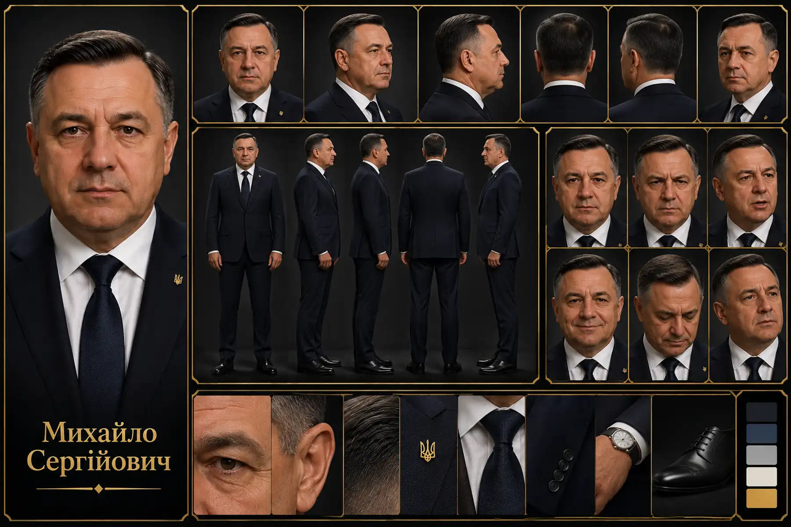

РОЛЬ У СЮЖЕТІ
Перший суспільний договір
Після ініціації Михайло Сергійович спершу вимикає мислезв’язок. Він боїться, що повна відкритість між людьми може викрити корупційні домовленості й похитнути державу швидше, ніж війна.
Від імені спільноти Ольга погоджує повну амністію за минулі дії для Михайла Сергійовича та тих, хто добровільно приєднається за ним, за умови повної відкритості надалі й співпраці на благо спільного суспільства. Це стає першим суспільним договором.
Згодом він працює з чиновниками та урядовцями, зокрема з людьми з корупційним минулим. Амністія не означає виправдання минулих вчинків: вона надається в обмін на повну співпрацю та чесну роботу в новій системі.
ДЕРЖАВНА РОБОТА
Перебудова уряду зсередини
Михайло Сергійович працює майже без відпочинку, пояснює зміни тисячам людей і залучає державних управлінців. Він добре знає стару систему та її слабкі місця.
Коли стає зрозуміло, що агенти Ордена проникли у відомства, адміністрації та служби, він координує виявлення й затримання ключових учасників мережі. Відомих агентів ізолюють, а операції маскують під звичайні державні перевірки.
ХАРАКТЕР І ЗОВНІШНІСТЬ
Стриманий управлінець
У першій розмові з Ольгою він постає міцним, трохи кремезним чоловіком з уважним поглядом і чіткою манерою говорити. Роками звик контролювати ситуацію та ухвалювати рішення, хоча після ініціації переживає помітну внутрішню напругу.
Візуальний образ
На затвердженому референсі він зображений із коротким темним волоссям, у темному діловому костюмі, білій сорочці та краватці. На лацкані — невеликий золотий тризуб. Це деталі візуального образу, а не додаткові факти книжкового канону.
Здібності та особисті речі
Підтверджено, що після ініціації він має здібності характерника та мислезв’язок, але спершу тримає його вимкненим і має навчитися контролювати нові здібності. Окремий перелік спеціальних здібностей чи особистих речей у доступних фрагментах не наведений.
Канон і межі підтверджених відомостей
Сюжетно підтверджені його статус урядовця й характерника, перший суспільний договір, координація урядового напрямку, робота з амністованими чиновниками та протидія агентурі Ордена. Точний вік, зріст і особисті речі не деталізовані в доступних фрагментах.